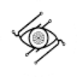

OpusСоздание контента
Для «Opus» сначала определите свою задачу и требуемый результат. Карточка относится к направлению «Создание контента».
Раздел «Создание контента»: варианты ИИ для этой задачи, описания возможностей и переходы к обзорам. Сравните несколько решений на одинаковом примере.
Подготовьте полезный пост из одного настоящего вопроса аудитории, используя собственные факты. Передайте ответ и небольшой пример; получите ясную публикацию с подходящим следующим действием, затем проверьте, не появились ли в ней придуманные отзывы или неподтверждённые свойства продукта.
Напиши пост по вопросу клиента: как хранить керамическую чашку, чтобы не повредить ручку. Используй мои рекомендации, добавь маленький пример размещения, не выдумывай отзывы и свойства материала.

Для «Opus» сначала определите свою задачу и требуемый результат. Карточка относится к направлению «Создание контента».
PEECH помогает командам редактировать и подготавливать видеоматериалы с ИИ-инструментами. Описаны автоматизация видеопроизводства и настройка элементов дизайна, которые используются при оформлении ролика. Продукт ориентирован на последовательную подготовку контента к публикации, сочетая работу с видео и управление его визуальной подачей для команды автора.
«Postly» работает с материалами для социальных площадок.
«Quick Creator» готовит текстовый черновик по условиям задачи. Дополнительно «Quick Creator» помогает с задачами поискового продвижения.
Shopia предлагает ИИ-инструменты написания и планирования контента для блога. Среди возможностей есть создание статей и рассмотрение конкурентных списков, а также средства SEO. API для пользовательских моделей дополняет текстовые задачи; в описании также представлена сеть специалистов для фриланс-работы.
Slidecast создаёт презентацию по заданной теме, подбирая текст и оформление слайдов. К материалу можно добавить озвучивание выбранным голосом. После подготовки пользователь делится презентацией через ссылку либо QR-код и наблюдает за просмотрами, чтобы понимать использование материала аудиторией.
«Stability Matrix» представлен в разделе «Создание контента». При выборе проверьте нужную операцию и условия работы с результатом.
«Steve AI» создаёт видеоматериал по заданию. Дополнительно «Steve AI» помогает подготовить персонализированный видеоматериал.
Сравнивать «Udio AI Music Generator» с другими инструментами раздела «Создание контента» удобнее на одинаковом исходном материале.
Для «UGC Scripts» сначала определите свою задачу и требуемый результат. Карточка относится к направлению «Создание контента».
«Vidds.co» создаёт видеоматериал по заданию. «Vidds.co» также готовит текстовый черновик по условиям задачи.
«Voicely 2.0» представлен в разделе «Создание контента». При выборе проверьте нужную операцию и условия работы с результатом.

Wondercraft помогает подготовить звуковой материал из текста и выбранной подачи. Готовую запись нужно оценивать по разборчивости и последовательности фраз.
xpression camera работает как виртуальная камера с ИИ-управлением выражениями лица в реальном времени. Приложение также предлагает анимационные варианты для контента. Среди направлений использования есть видеочаты и трансляции, а также мемы и GIF, объединяющие изображение человека с выбранной визуальной подачей.
Для «Ask AI» сначала определите свою задачу и требуемый результат. Карточка относится к направлению «Чат-боты и ассистенты».
«Augxlabs» создаёт видеоматериал по заданию. «Augxlabs» также помогает подготовить персонализированный видеоматериал.

В инструменте «Automateed» можно готовить текст по теме и требованиям к содержанию. Ещё одно направление работы: развивать сюжет и готовить авторский черновик.
«Boolvideo» создаёт видеоматериал по заданию. «Boolvideo» помогает подготовить персонализированный видеоматериал.
Сравнивать «Call My Link» с другими инструментами раздела «Создание контента» удобнее на одинаковом исходном материале.
«Chromox» создаёт видеоматериал по заданию. «Chromox» помогает подготовить персонализированный видеоматериал.

«Chub» представлен в разделе «Создание контента». При выборе проверьте нужную операцию и условия работы с результатом.

Copy.ai связывает подготовку текста с процессами маркетинга и продаж. Пользу следует оценивать по конкретному рабочему материалу, который нужен команде.
«CopyCat» создаёт видеоматериал по заданию. Дополнительно «CopyCat» помогает подготовить персонализированный видеоматериал.
«CosmoAI» работает с материалами для социальных площадок.
Dubverse подготавливает субтитры и голосовую дорожку для видео с участием ИИ. Пользователь может выбирать язык и вариант говорящего. Совместная работа и доступ к языковым специалистам дополняют создание озвучки, позволяя рассматривать речевую часть вместе с подготовкой видеоматериала к использованию.
«Hix.ai» готовит текстовый черновик по условиям задачи.
Hookle помогает малому бизнесу вести социальные публикации с использованием ИИ. В наборе предусмотрены генерация содержимого, планирование размещения, работа с хештегами и аналитика. Продукт объединяет подготовку текста с организацией публикационной последовательности, чтобы создание отдельного материала рассматривалось вместе с графиком и последующим разбором активности канала.
«Junia AI» помогает с задачами поискового продвижения.

В инструменте «Lumen5» можно собирать видеосцену по описанию или визуальному исходнику. Ещё одно направление работы: готовить видеоматериалы для публикации.
Morise помогает авторам YouTube готовить названия, описания и теги роликов. Инструмент также предлагает темы будущих видео и средства подготовки сообщений для сообщества. Его назначение связано с оформлением и планированием публикаций: текстовая работа над видео дополняется идеями, но не подтверждает будущие просмотры или поисковую позицию.
Для «Must Ai Generator» сначала определите свою задачу и требуемый результат. Карточка относится к направлению «Чат-боты и ассистенты».
«Naker» подготавливает трёхмерные объекты. «Naker» собирает материал для презентации.
«Videomagic» создаёт видеоматериал по заданию. «Videomagic» помогает подготовить персонализированный видеоматериал.
«Vidful AI» создаёт видеоматериал по заданию. Дополнительно «Vidful AI» помогает подготовить персонализированный видеоматериал.
«Yarn.co» подготавливает короткие фрагменты видеозаписи. Дополнительно «Yarn.co» создаёт видеоматериал по заданию.
«aiCarousels.com» работает с материалами для социальных площадок.
Сравнивать «Bibit AI» с другими инструментами раздела «Маркетинг» удобнее на одинаковом исходном материале.
Buzzli помогает работать с публикациями LinkedIn с участием ИИ. Инструмент предлагает идеи и подготавливает контентный план, затем создаёт структурированный текст для выбранного сообщения. Такой набор связывает обсуждение будущей темы с написанием публикации и подготовкой материалов для профессиональной аудитории.
Сравнивать «Camira» с другими инструментами раздела «Тексты и контент» удобнее на одинаковом исходном материале.
Для «CaptionIt» сначала определите свою задачу и требуемый результат. Карточка относится к направлению «Создание контента».
Dubify готовит языковые версии видео с помощью ИИ. Сервис автоматизирует перевод и озвучивание, используя звучание человеческих голосов. Он предназначен для авторов материалов, маркетинговых команд, учебных курсов и организаций, которым требуется представить записанное видео другой аудитории с соответствующей речевой дорожкой.
Сравнивать «Friday AI» с другими инструментами раздела «Создание контента» удобнее на одинаковом исходном материале.
Сравнивать «HitPaw Online Video Enhancer» с другими инструментами раздела «Видео» удобнее на одинаковом исходном материале.
Сравнивать «Imagine Studios Ai» с другими инструментами раздела «Создание контента» удобнее на одинаковом исходном материале.
«Kapwing» создаёт видеоматериал по заданию. «Kapwing» также помогает подготовить персонализированный видеоматериал.
Keyframes Studio создаёт и редактирует видеоматериалы для социальных площадок. В наборе предусмотрены повторное использование контента, адаптация вертикального и горизонтального кадра, автоматические субтитры. Редактор связывает эти операции, позволяя готовить версии исходного ролика под разные варианты публикации и сочетать изменение формата с добавлением текстового сопровождения.
«LEAi» работает с учебными курсами.
«Lemonaid Music» подготавливает музыкальные варианты по заданию.
Страница 7 из 8